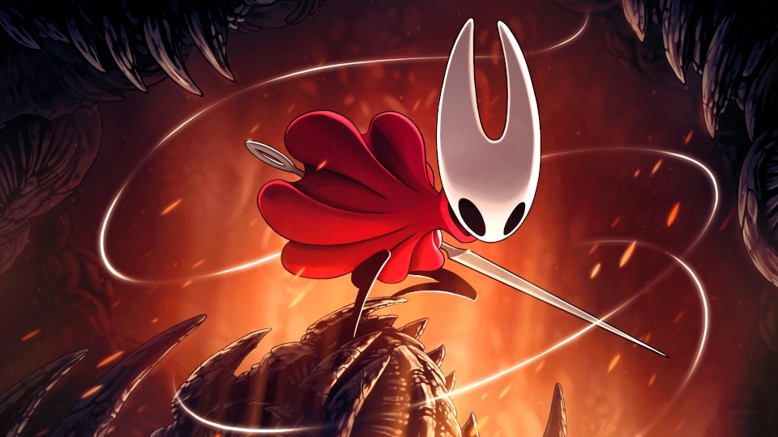
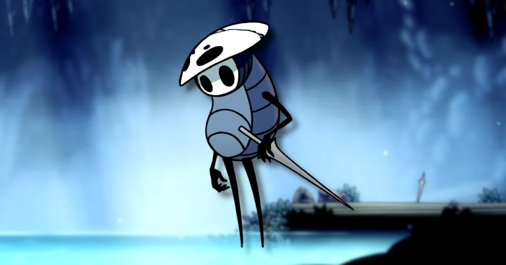
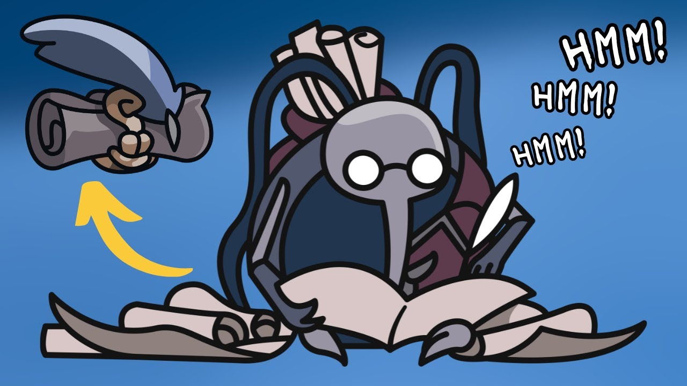
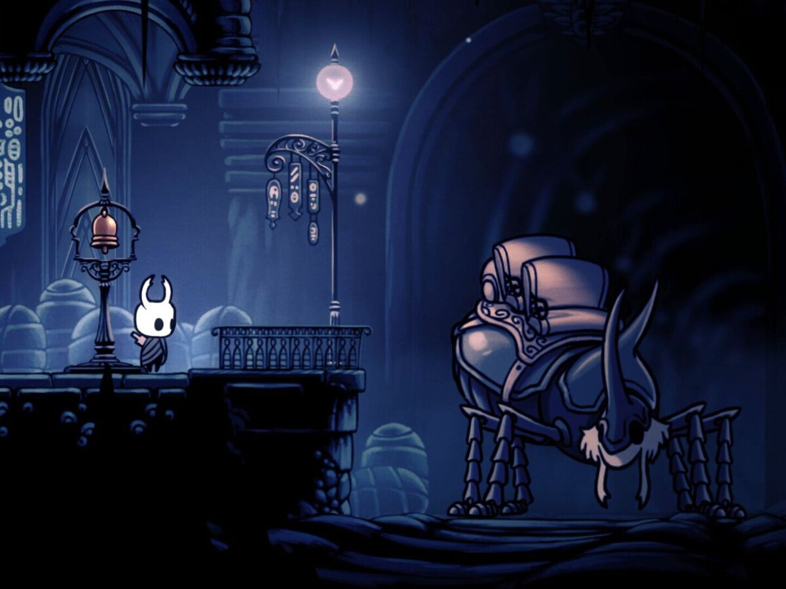

Hollow knight es un videojuego indie que cuenta la historia de un caballero que esta vacio por dentro ya que dentro de el solo avita la sombra de su alma, se nos cuenta la historia sobre como este caballerito se va dando cuenta de su mision durante su viaje, se nos presentan varios personajes secundarios los cuales seran interactivos durante la historia y algunos de ellos presentaran peleas asi como otros nos daran su ayuda incondicional, el objetivo principal del juego es liberar al reyno de una infeccion que perjudica la vida en todo el reyno, poco a poco se dara cuenta junto con sus avances de su historia pasada.

En este juego tenemos varias herramientas claves asi como herramientas secundarias, estas se dividen en dos a mi parecer ya que dentro del juego hay algunas que son "opcionales" ya que no son necesarias para terminar el juego, mas sin embargo es rocomendable conseguirlas todas para el ENDGAME ya que facilita las peleas finales ya que este juego cuenta con varios finales y 3 jefes finales cada uno respectivo a su final correspondiente dentro de la historia.

En esta pagina solo veremos las herramientas principales, pero si quieres saber sobre todas las herramientras DA CLICK AQUI.
Aqui se daran ejemplo de algunas de las herramientras principales del juego:
El aguijon es el arma principal del caballerito ya que es el arma con la que contas desde el inicio y es el arma principal con la cual llevaremos a cabo todas las peleas, este se puede mejorar hasta 4 veces con un personaje especifico que encontraremos en ciudad de las lagrimas.

Espiritu vengador es la primera habilidad que aprender el caballerito el cual lo obtendremos despues de derrotar al Jefe llamado Falso Campeon.

Capa de polilla es el item que nos permitira poder hacer un pequeño salto o dash hacia izquierda o derecha.

Las garras de mantis es otro de los objetos indispensables para jugar de una mejor manera al Hollow Knight.

El salto desolador no es tan necesario para pasarte el juego pero es uno de mis echizos favoritos.

El corazon de cristal si es una habilidad indispensable tanto para la movilidad como para llegar a lugares alejados.

Sin el aguijon onirico es imposible completar el juego.

La lagrima de isma nos permite nadar en acido sin recibir daño.

Hay varios personajes principales entre ellos la protagonista del juego SilkSong.

Hornet es el princial personaje secundario. DA CLICK AQUI
Quirrel es uno de los personajes que nos acompaña a lo largo de toda la historia. DA CLICK AQUI
Zote es un personaje narcisista. DA CLICK AQUI

Cornifer es el encargado de venderte los mapas. DA CLICK AQUI
El CiervoCaminos es el transporte del caballerito. DA CLICK AQUI
